Вся семья за один визит
Пока одни стригутся, другие делают маникюр, а детям есть чем заняться.
5,0 279 оценок · Ефремов, Гоголя, 19
Место, где хорошо – всей семье
Папа на стрижке, мама на маникюре, дети смотрят мультики и пьют молочный коктейль. А бариста сварит капучино, раф или фильтр – здесь и с собой.
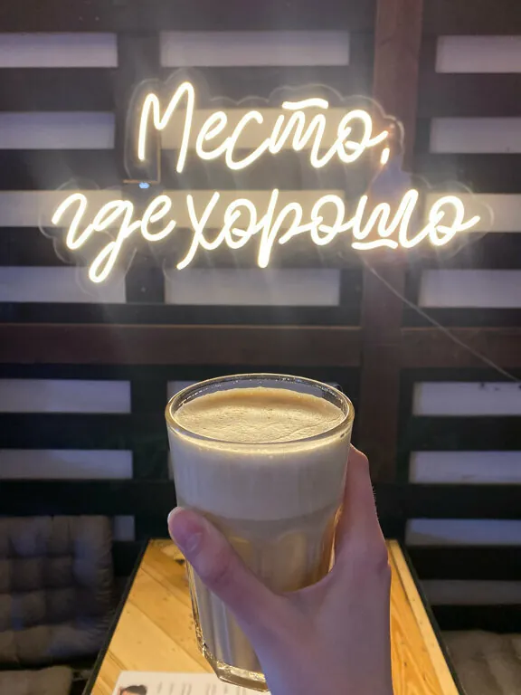
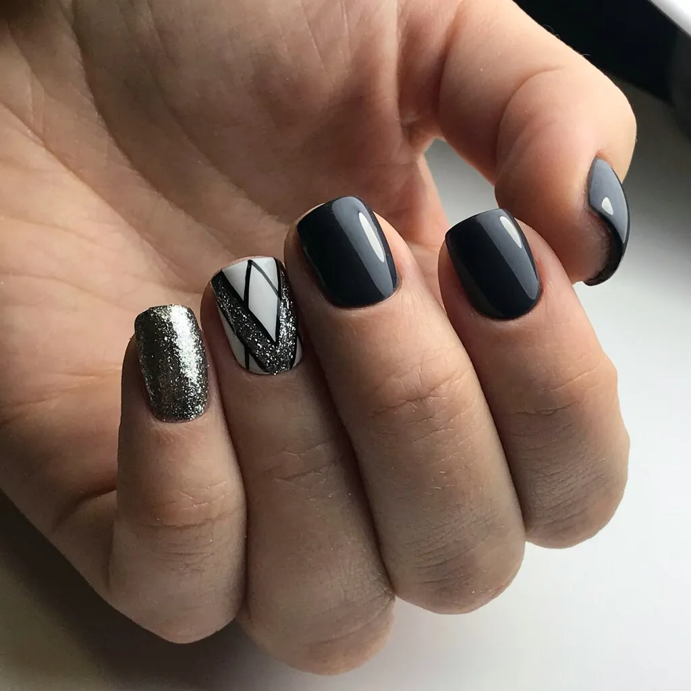
Почему к нам приходят семьями
Так о Коvчеге пишут гости – больше ста двадцати отзывов.
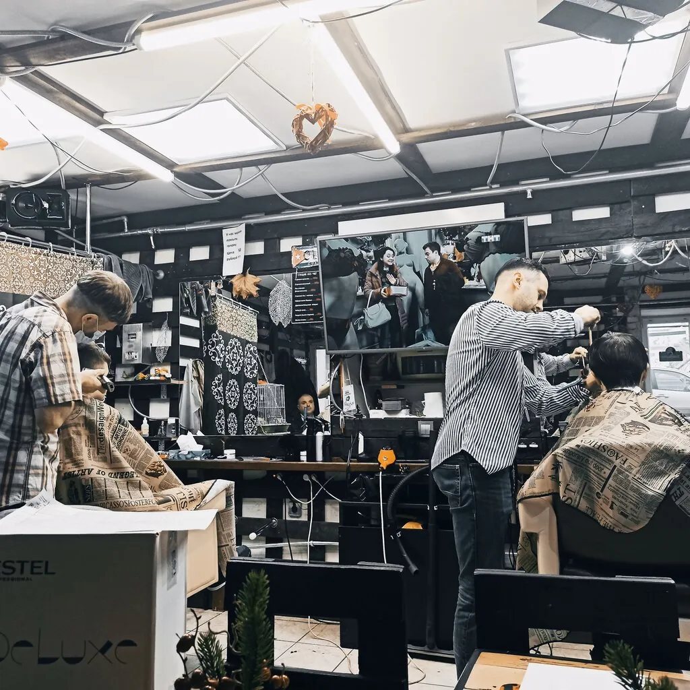
Пока одни стригутся, другие делают маникюр, а детям есть чем заняться.
Мастера находят подход к малышам: мультики, разговоры о супергероях – и стрижка готова.
Ребенок даже не пискнул во время стрижки,хотя до этого очень боялсяИгорь, отзыв клиента
Подскажет с выбором и бережно работает с кожей.
маникюр делает аккуратно даже для тонкой кожиEY., отзыв клиента
Капучино, латте, раф, фильтр и бамбл – здесь или с собой.
вкуснейший Кофе, который можно взять с собойЮрий Д., отзыв клиента
В студии проходят квартирники и творческие вечера.
по вечерам в определённые дни там проводят квартирники и другие интересные мероприятияТатьяна Ф., отзыв клиента
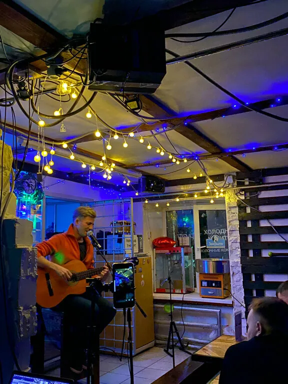
пока папа на стрижке, мама на маникюре, дети могут посмотреть мультики
М. Елена, отзыв на Яндекс Картах
Цены
Цены из прайса студии. Стоимость маникюра уточните при записи.
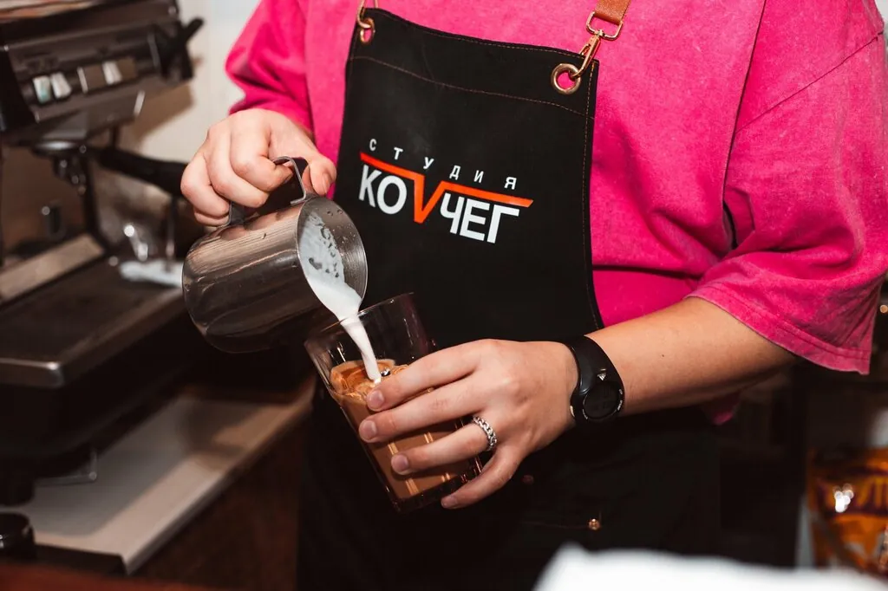
Стрижки – по записи, поэтому позвоните или напишите заранее.
Работы
Дерево, неоновое «Место, где хорошо», гитары на стенах и кофе с рисунком.
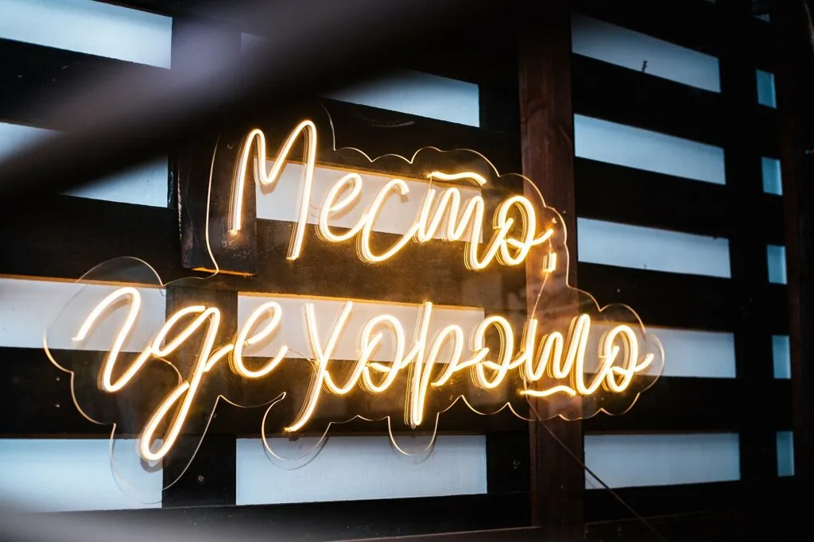
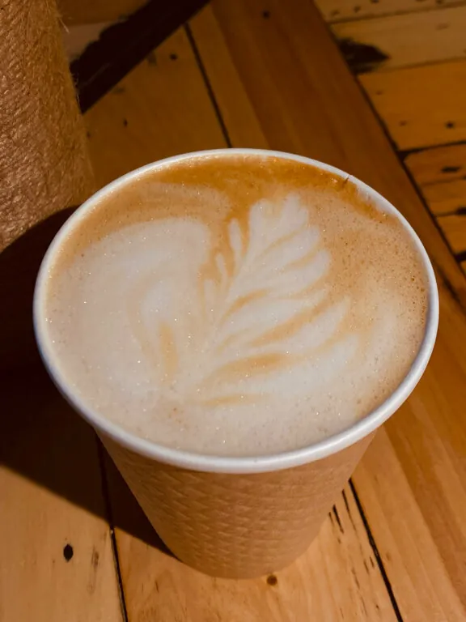
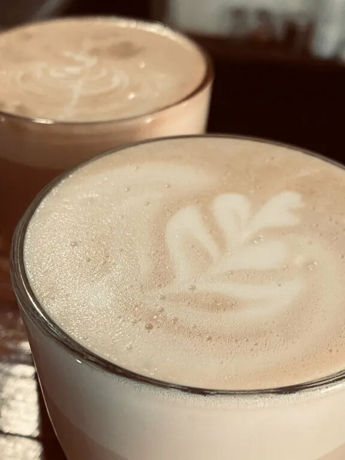
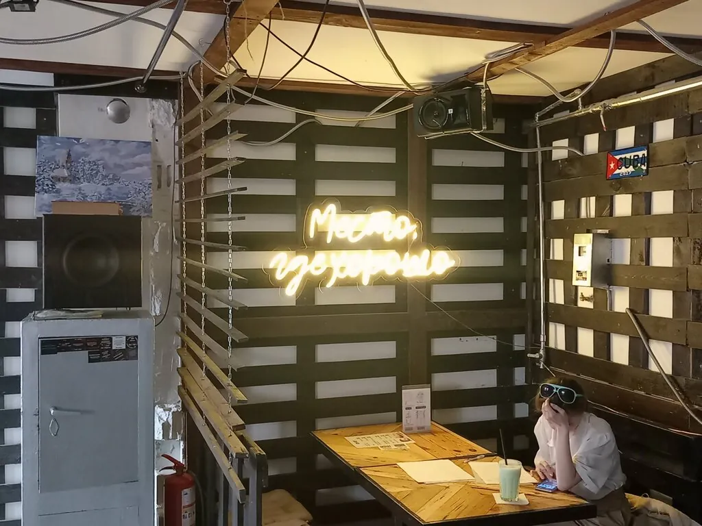
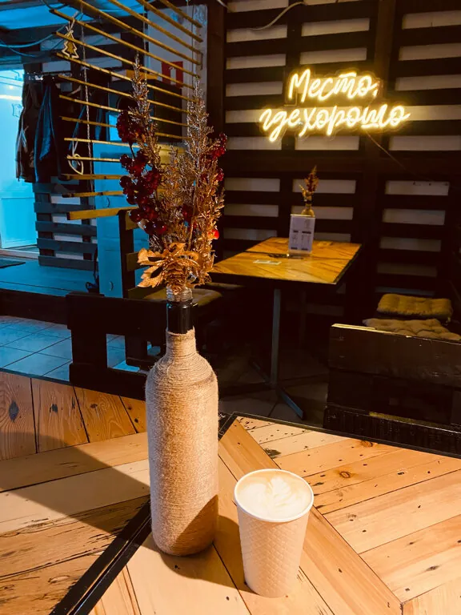
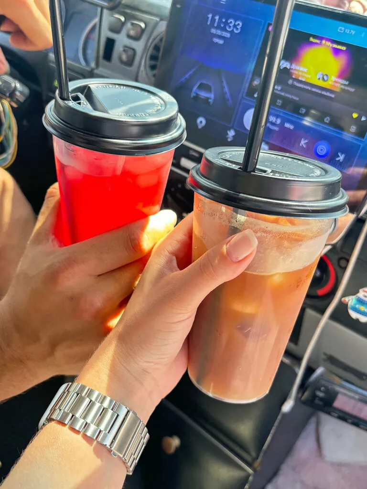
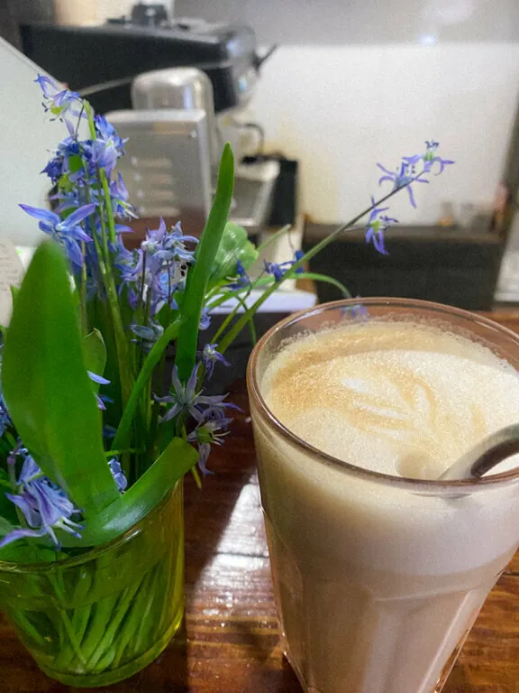
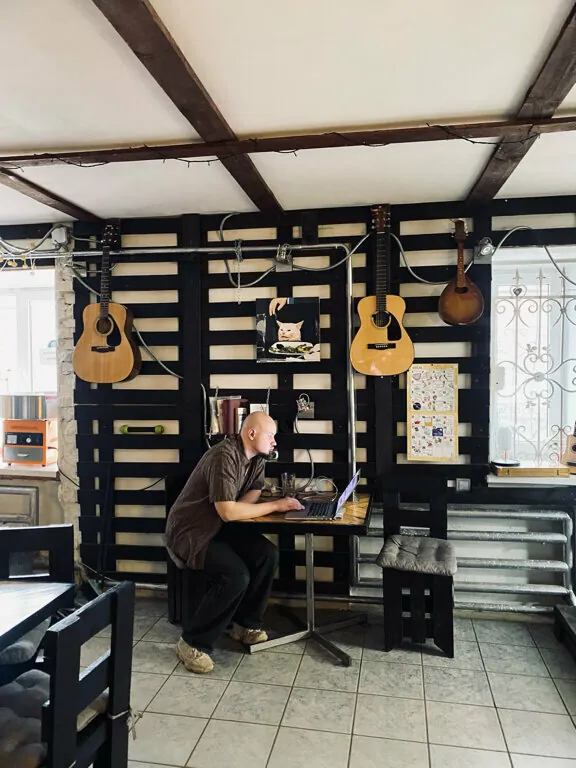
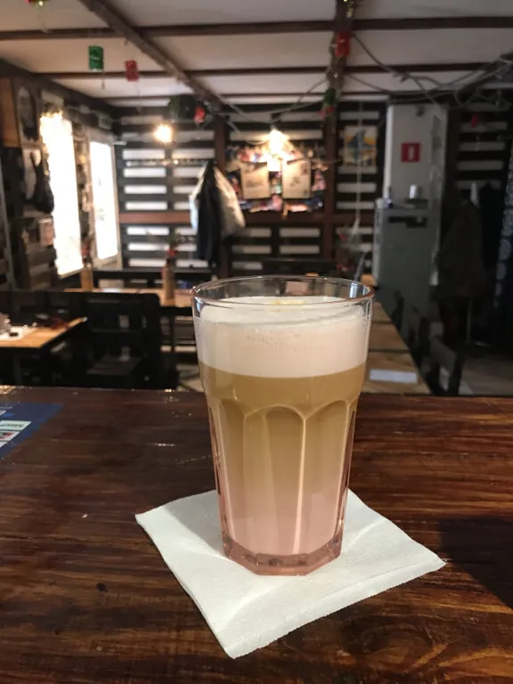
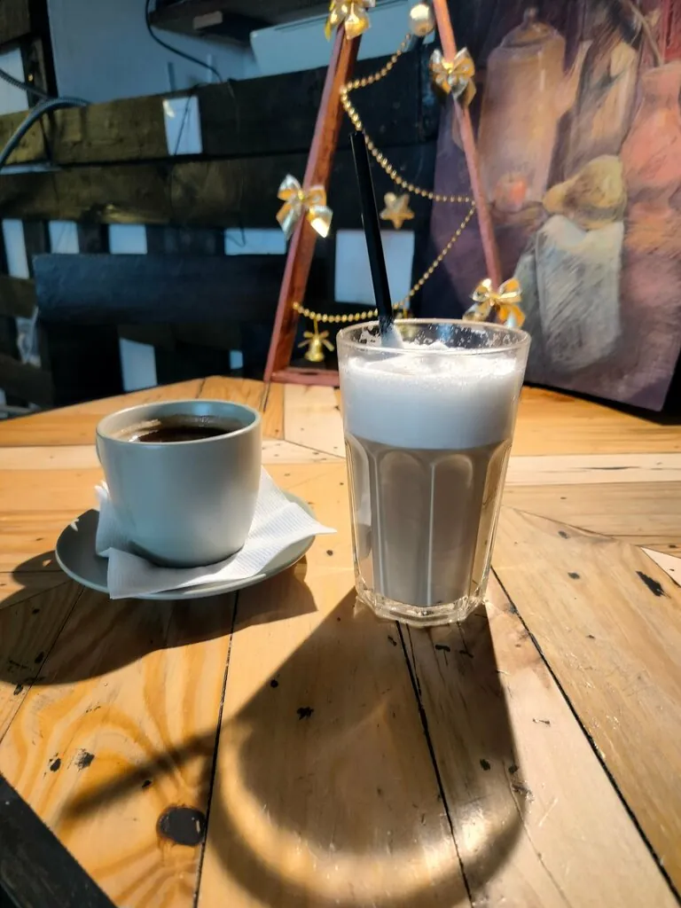
Отзывы
Ковчег-это полюбившееся всей семьёй место! С детками прийти одно удовольствие, пока папа на стрижке, мама на маникюре, дети могут посмотреть мультики, попить вкусный коктейль и покушать сладкую вату! Мастера все на высшем уровне! Мастер маникюра Елена 🔥 Всем советую!!! 5+
Замечательное место, уютная обстановка и вкусный ароматный кофе. Мастер маникюра Елена - специалист своего дела. Подскажет с выбором, маникюр делает аккуратно даже для тонкой кожи.
Атмосферное место. Вкусный кофе ,а главное замечательный мастер. Ребенок даже не пискнул во время стрижки,хотя до этого очень боялся .
Самое лучшее место в этом городе. Там готовят офигенный кофе, делают классные стрижки и шикарный маникюр. А по вечерам в определённые дни там проводят квартирники и другие интересные мероприятия, которые наполнят ваше сердце теплом, радостью, счастьем и другими положительными эмоциями. Всем рекомендую посетить данное заведение💞✨ P.S. моя мать - топчик!)))
Какое классное гостеприимное и дружелюбное место! Можно подстричься, выпить вкусный кофе, посидеть с друзьями за столиком. Музыкальные инструменты на стенах, вырезки из газет, фотографии, аппараты для приготовления сладкой ваты и попкорна, чего там только нет!
Случайно зашла во время прогулки по городу Сначала увидела вывеску про кофе, потом услышала звук гитары...уже интрига)) Часто бываю в Ефремове и уже отчаялась там найти вкусный кофе. Здесь оказался очень вкусный кофе, интересное общение с Максимом ( наверно он хозяин этого местечка). Очень атмосферно и мило, необычный креативный формат цирюльни для мужчин и кафе-кофе для всех
Отличное место, где уютно и комфортно сын всегда идёт с удовольствием и уходит в отличном настроении. Пока ожидаешь можно насладится вкусным кофе, детям коктейль. Спасибо!
Отличные мастера,замечательный подход к каждому клиенту,мультики для детей на выбор,вкусный кофе.
Сын всегда подстригаться у мастера Максима))) и кофе вкусный, и массаж там делают, и мастер маникюра красотка!!!
Отличное атмосферное место для нашего города! Классный парикмахер, отличная мастер маникюра и вкуснейший Кофе, который можно взять с собой😍
Единственное место в Ефремове где готовят отличный кофе спасибо бариста Георгу, также тут устраивают раз в 14 дней вечерники с открытым микрофоном что не мало важно без алкоголя и прочего дурмана чего в наше время не хватает. Отличное место для приятного и душевного времяпрепровождения отдельное спасибо хозяину Максиму за организацию подобного места для молодёжи!!! Жаль что только 5 звезд поставил бы 10!!!
Вас когда-нибудь стригли под песни под гитару? Я стал невольным участником этого, скажу так это лучшая студия по уходу за собой. Все большие профи, атмосфера, отношение, кофе высший сорт.
Очень уютное место - кофе отличный, при чем не только стандартный набор, но и фильтр кофе или бамбл можно сделать🔥 Стригут тоже отлично👍 Тот случай, когда люди занимаются тем что умеют и что любят.
Атмосферная кофейня с вкусными напитками и приятно низкими ценами! Особенно впечатлило, что бариста с интересом рассказывал про напитки и помогал определиться с выбором, видно, что человек горит этим делом, однозначно рекомендую данную кофейню к посещению)
Хорошее место! Зашёл попил вкусный кофе, подстригся. Приветливый персонал. Рекомендую к посещению
Очень хорошее место. Кофе вкусное. Стрижем ребенка уже где-то месяцев 6 каждые 3 недели у мастера Максима.
Душевное местечко для маленького города. Всегда,когда приезжаю в Ефремов, обязательно заглядываю за кофе в ковчег. Побольше бы таких мест в городе!🙃
Супер! Лучший маникюр и кофе в городе !
Кофе отличный. Специально заехали по дороге в Задонск и не пожалели
Приезжали в Ефремов посмотреть город. Нашли кофейню Ковчег. Остались довольны качеством кофе и атмосферой. Уезжали и забежали еще за кофе 👍
Это волшебное место необычного формата. Стоит один раз побывать там - влюбляешься сразу 🤩 Очень рекомендую! Кофе ☕выше всяких похвал! Но главное-атмосфера! И классные ребята! Как только приеду в Ефремов-сразу к вам, ребята! Ждите снова!
Отличное заведение в нашем городе, ребёнок ходит туда подстригаться. Сотрудники вежливые,добрые, всегда с улыбкой. Всегда можно выпить кофе или взять с собой. А то что касается стрижки, это отдельное спасибо 🙏 У Максима золотые руки👏👏👏👏а как дети его любят, и как он находит с ними общий язык
Подстригал мастер Максим, маленького ребёнка, всё прошло без истерик, смотрел мультики.
Студия Коvчег
Напишите ВКонтакте или позвоните: +7 (953) 187-99-87.
Запись
На стрижку лучше записаться заранее – ВКонтакте или по телефону. За кофе – просто заходите.
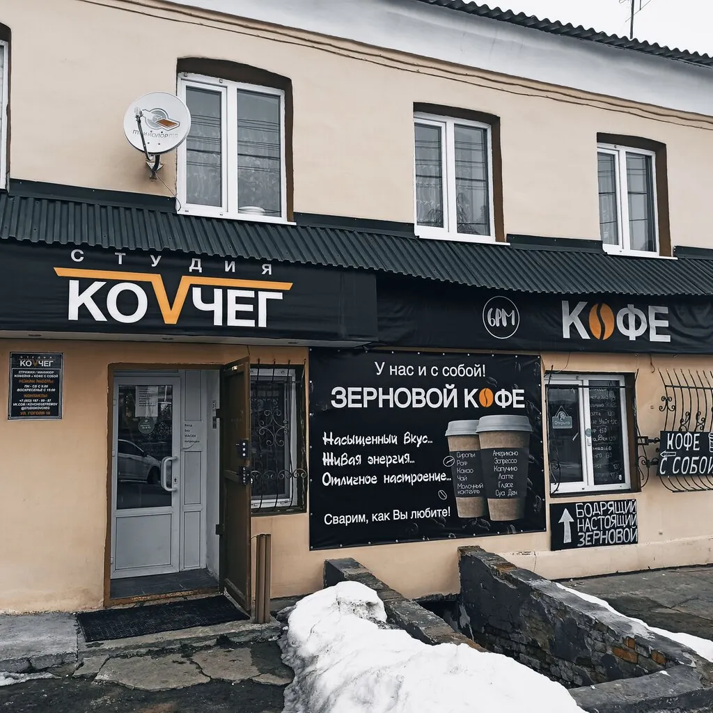
Оставьте телефон – мастер подберёт удобное время.